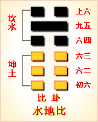

周易第八卦 比 水地比 坎上坤下
比：吉。原筮元永贞，无咎。不宁方来，后夫凶。
彖曰：比，吉也，比，辅也，下顺从也。原筮元永贞，无咎，以刚中也。不宁方来，上下应也。后夫凶，其道穷也。
象曰：地上有水，比;先王以建万国，亲诸侯。
初六：有孚比之，无咎。有孚盈缶，终 来有他，吉。象曰：比之初六，有他吉也。
六二：比自内，贞吉。象曰：比之自内，不自失也。
六三：比之匪人。象曰：比之匪人，不亦伤乎!
六四：外比之，贞吉。象曰：外比於贤，以从上也。
九五：显比，王用三驱，失前禽。邑人不诫，吉。象曰：显比之吉，位正中也。舍逆取顺，失前禽也。邑人不诫，上使中也。
上六：比之无首，凶。象曰：比之无首，无所终也。
比卦卦象，水地比卦的象征意义
比卦，这个卦是异卦相叠，上卦为坎，下卦为坤。坤为地，坎为水。地上有水，水附大地，地纳河海，相互依赖，亲密无间。地承载水，水滋润地，两者相互依存。它阐述的是相亲相辅，宽宏无私，精诚团结的道理。
“比”，就其这一字本义是互相靠近，字形是两个人挨近一起，并列紧靠，如鱗次栉比。
比，不但是指人与人的团结互助，也指国家与国家之间的关系，如《周礼夏官》形方氏中有“大国比小国”一语，说是大国亲近小国的意思。但作为《比》卦，实乃论述比邻以及论述用亲附和和征伐进行联盟之卦。
还有，从长远和整体上看，《比》卦的睦邻政策和怀柔政策仍是建立在侵伐吞并的基础上的，其卦辞中的凡不来归附者便予以攻灭的“不宁方来，后夫凶”和“显比：王用三驱，失前禽”便是这一问题的表白。
比卦位于师卦之后，《序卦》中这样解释本卦：“众必有所比，故受之以比。”师是众人的意思，人多了一定会有所亲近，所以接着是比卦。《杂卦》说：“比乐师忧。”意为，比卦喜乐，师卦忧苦。
《象》曰：地上有水，比。先王以建万国，亲诸侯。
《象》这段话的意思是：从卦象上看，地上有江河湖泊，江河湖泊与大地相亲相辅，辅助大地滋养万物。用江河湖泊喻为臣子，大地喻为君王，比喻臣子辅助君王治理天下，这就是比卦的卦象。先王从卦象中得到启示，而建立诸侯国，
亲近诸侯和臣子，共同治理天下。
比卦启示的是诚信团结的道理，属于上上卦。《象》这样来断此卦：顺风行船撒起帆，上天又助一蓬风，不用费力逍遥去，任意而行大亨通。
此卦的卦名为比。甲骨中的“比”字 像两人步调一致、比肩而行的样子。所以 本义为并列、并排之意。前一卦为师，是 打仗的意思，打仗胜利后，该开始治理国 家了，治理国家需要贤臣的辅佐，所以这 一卦也有辅佐的意思。
比卦的卦画为一个阳爻五个阴爻， 与师卦的卦画相似，只是排列顺序正好相 反，师卦中的九二阳爻在比卦中来到了九 五君位，象征君临天下，群臣辅佐。下面便通过卦象来对卦画进行 具体的分析。
比卦上卦为坎为水， 下卦为坤为地，地上有水 便是比卦的卦象。水在大 地上慌动，泥土因为有了 水而湿润可以养育万物， 这就像君王巡视四方，恩 泽四方，群民与君王一条 心，共同辅佐君王，而君王 居安思危，能够严谨治国。可见，这一卦确实是充满了喜悦与欢乐的。
关键词：周易,比卦,水地比,坎上坤下
比卦：吉利。三人同时再占问，占问长久吉凶，没有灾祸。不愿服从的邦国来了，迟迟不来的诸侯要受罚。
初六：抓到俘虏，安抚他们。没有灾祸。抓到俘虏，装满酒饭款待他们。即使有变故，结果吉利。
六二：自己内部团结一致，贞兆吉利
六三：与不正派的人结党营私。
六四：与外国结盟亲善，贞兆吉利。
九五：广泛亲善。君王打猎时三面包围，只留一面让猎物逃走。邑中百姓毫不惊骇，吉利。 上六：小人互相倾轧，不能团结一心，凶兆。
(1)比是本卦标题。比的本义是亲密，在本卦中为一词多义。由于“比”字 多次出现，本卦用它来作标题。全卦的内容主要讲交往和团结。
(2)原筮： 再筮，指三人同时再占问。
(3)不宁方：不安宁的邦国，不愿臣服的邦国。
(4)后夫：迟到的诸侯。
(5)比：亲近、安抚。
(6)缶(fou)：瓦盆。 盈缶：用瓦盆装满酒饭。
(7)终来：即使。有它：有变故，有意外。
(8)比：团结一致。自内：自己内部。
(9)比：结党营私。匪人：不正派的 人。
(10)外：外部，外国。
(11)显：外，这里表示广泛。
(12)王用三 驱：君王打猎时让卫队从左右后三面把猎物驱赶到中间以便射猎。
(13)诫： 用作“骇”，惊吓。(14)比：互相倾轧。无首：没有头脑，指没有核心。